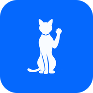

Sin conexión
Esta página aún no estaba guardada para usarse sin conexión. Tus proyectos y medios siguen en este navegador: vuelve a intentarlo cuando tengas red, o abre Concat desde el icono instalado.

Esta página aún no estaba guardada para usarse sin conexión. Tus proyectos y medios siguen en este navegador: vuelve a intentarlo cuando tengas red, o abre Concat desde el icono instalado.